ภาพหน้าจอจริงของร้านตัวอย่าง (ข้อมูล ก.ย. 69) · ถ่าย 24 ต.ค. 2569 · กดภาพเพื่อขยาย
ข้อมูลซ้ำในระบบ — วางเทียบกันทีละข้อ
ขอบเขียวทึบ = เสนอเก็บ · ขอบแดงประ = เสนอตัด · ตอบกลับแค่เลขข้อ เช่น “ตัด B1 B3 · แก้ C1–C4 · B6 ขอ mockup”
B1
แดชบอร์ด: กำไรเดือนเดียวกัน แสดง 3 รอบ
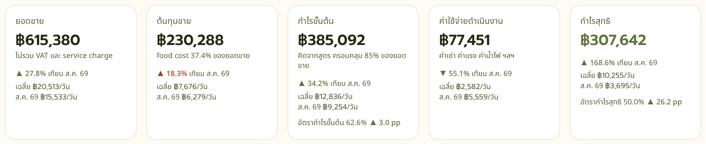
การ์ด 5 ใบยอดขาย · ต้นทุนขาย · กำไรขั้นต้น · ค่าใช้จ่าย · กำไรสุทธิ + เทียบเดือนก่อน
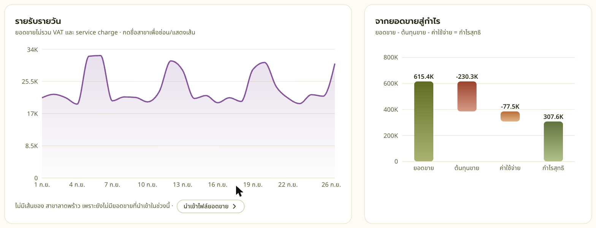
“จากยอดขายสู่กำไร” (กล่องขวา)615.4K − 230.3K − 77.5K = 307.6K — ตัวเลข 4 ตัวเดียวกับการ์ด ไม่มีอะไรเพิ่ม
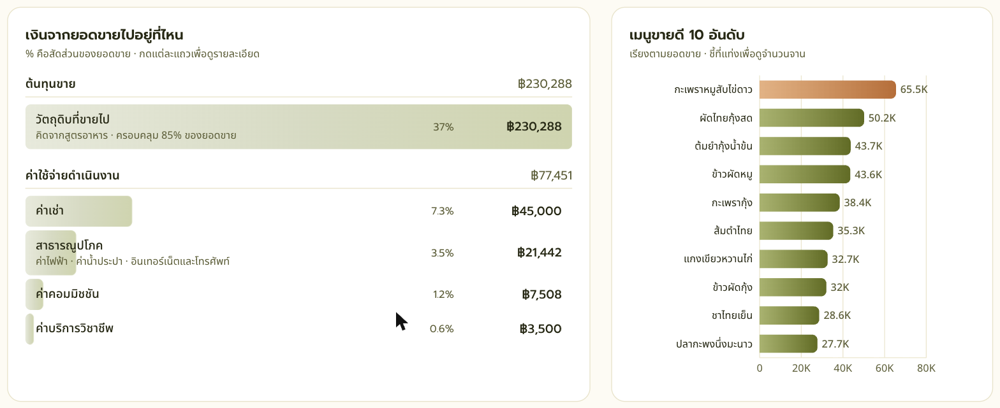
“เงินจากยอดขายไปอยู่ที่ไหน” (กล่องซ้าย)มีของเพิ่ม: ค่าใช้จ่ายแยกหมวด เป็น % ของยอดขาย
เสนอ: ตัดกราฟ “จากยอดขายสู่กำไร” · กราฟรายรับรายวันขยายเต็มแถวแทน
B2
แดชบอร์ด: ตารางสาขา = การ์ดด้านบน (เมื่อมีสาขาเดียวที่ขาย)
การ์ดด้านบน฿615,380 · ฿230,288 · ฿385,092 · ฿77,451 · ฿307,642
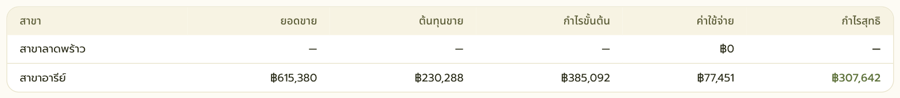
ตารางสาขาท้ายหน้าแถวอารีย์เป็นตัวเลขชุดเดียวกันเป๊ะ · แถวลาดพร้าวเป็น “—”
เสนอ: แสดงตารางเฉพาะเมื่อมีอย่างน้อย 2 สาขาที่มียอดขายในช่วงนั้น (ไม่ตัดทิ้ง เพราะร้านหลายสาขาต้องใช้)
B3
เมนูที่ยังไม่มีสูตร: รายการเดียวกัน 3 ที่
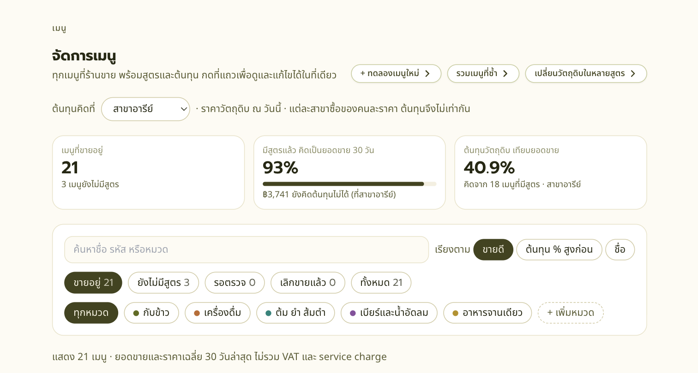
จัดการเมนู“3 เมนูยังไม่มีสูตร” · “93% · ฿3,741 ยังคิดต้นทุนไม่ได้” · ตัวกรอง “ยังไม่มีสูตร 3”
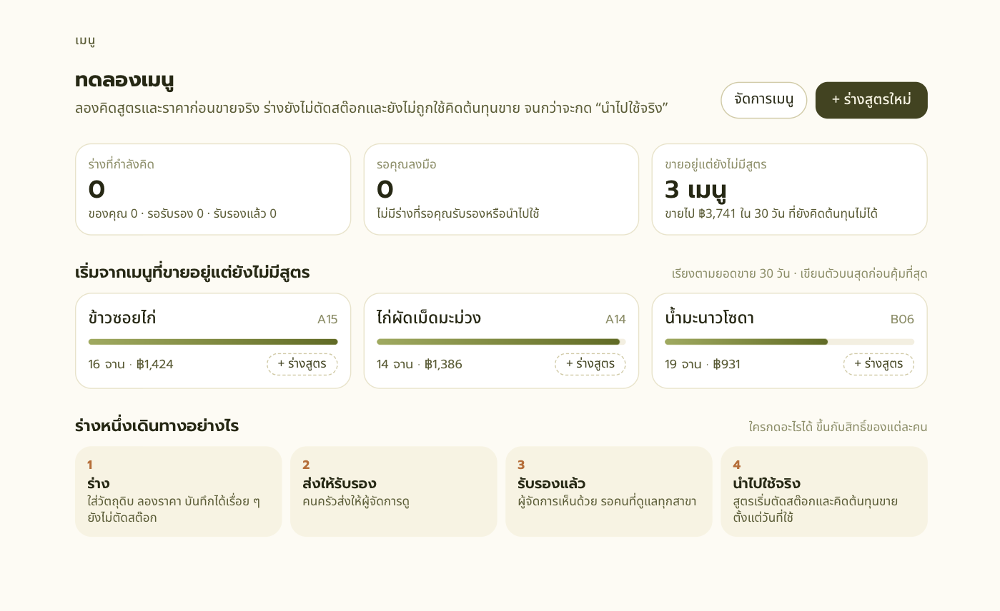
ทดลองเมนู“3 เมนู ฿3,741” + การ์ดสามเมนูพร้อมปุ่ม “+ ร่างสูตร” (สิ่งที่ต้องทำต่อ)
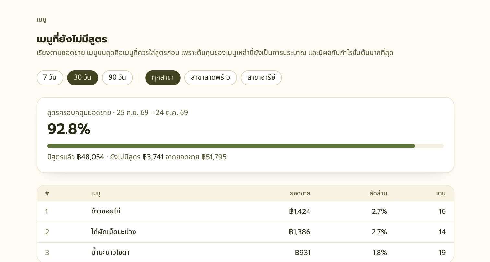
หน้าเมนูที่ยังไม่มีสูตร92.8% · ฿3,741 · สามเมนูเดิม — เพิ่มแค่สวิตช์ 7/30/90 วัน
เสนอ: ตัดหน้า /menus/coverage · ลิงก์ที่ชี้มาให้ไปทดลองเมนูแทน
B4
ค่าใช้จ่ายแยกหมวด: หน้ารายการบิล vs หน้าวิเคราะห์
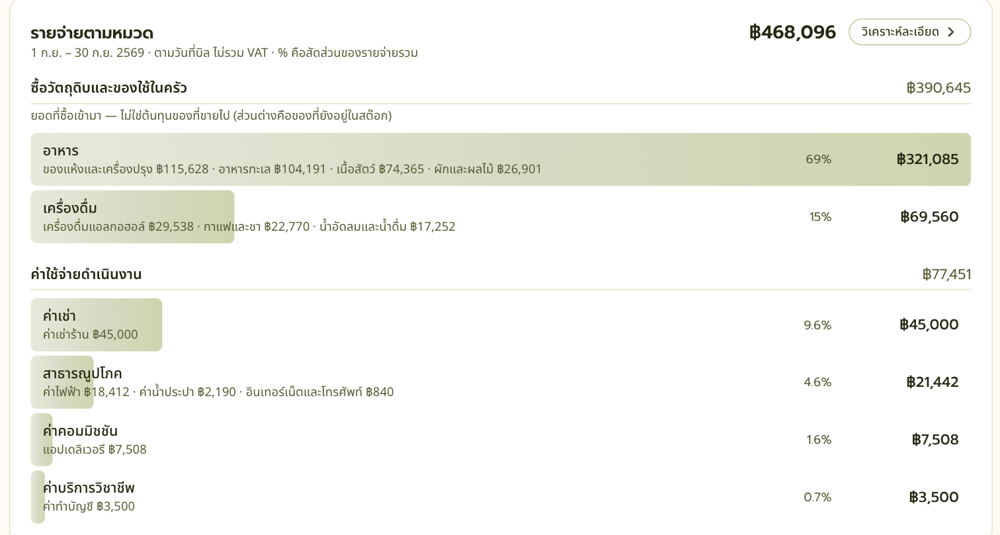
ค่าใช้จ่าย (รายการบิล) · รายจ่ายตามหมวดอาหาร ฿321,085 · เครื่องดื่ม ฿69,560 · ค่าเช่า ฿45,000 …
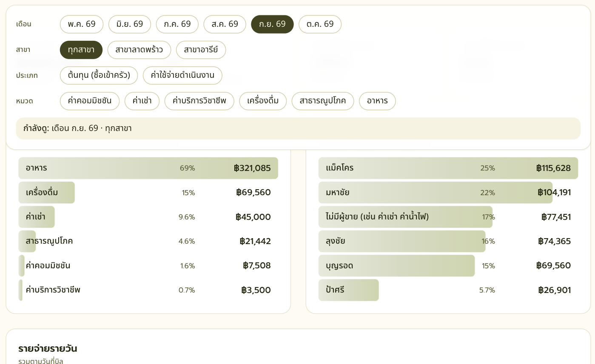
วิเคราะห์รายจ่าย · แยกตามหมวดตัวเลขชุดเดียวกัน + เจาะลงได้ + ผู้ขาย + รายวัน
เสนอ: ตัดออกจากหน้ารายการบิล (หน้านั้นเป็นที่บันทึกและหาบิล) เหลือปุ่ม “วิเคราะห์ละเอียด ›” ที่มีอยู่แล้ว
B5
นับไม่ตรงกับระบบ: ป๊อปอัพในหน้าต้นทุน vs หน้าของหายไปไหน
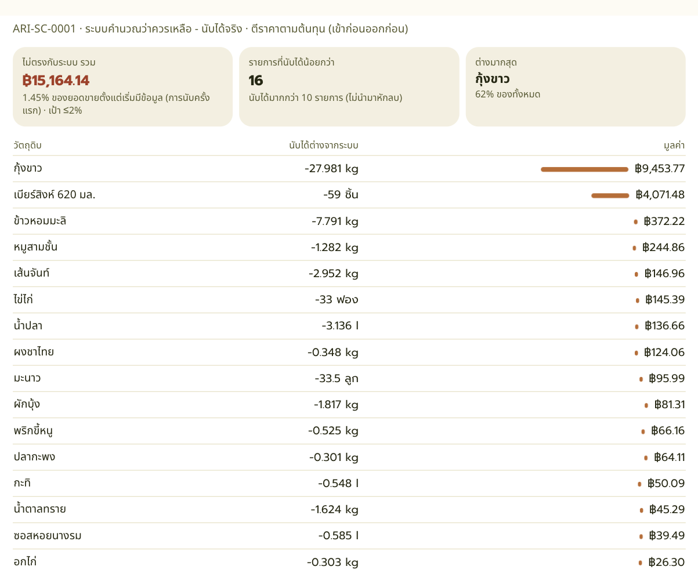
หน้าต้นทุน · ป๊อปอัพการนับรายการ 16 ตัว ตัวเลขเดียวกัน
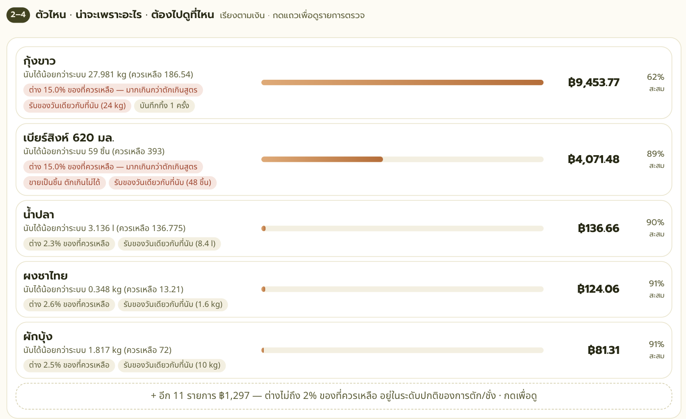
ของหายไปไหนรายการเดียวกัน + ป้ายสาเหตุ + พับรายการระดับปกติ + กดดูรายการตรวจ
เสนอ: กดจุดการนับหรือรายการ “ไม่ตรงกับระบบ” ในหน้าต้นทุน → ไปหน้าของหายไปไหนที่การนับครั้งนั้นเลย (ไม่มีป๊อปอัพ)
B6
รายการวัตถุดิบ: สต๊อกคงเหลือ vs สินค้า/วัตถุดิบ
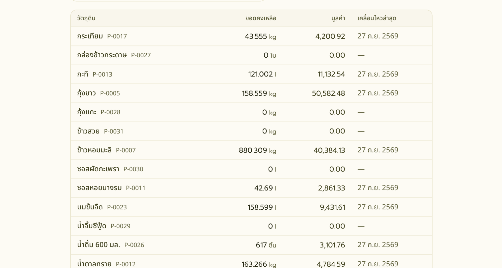
สต๊อกคงเหลือ (สาขาอารีย์)คงเหลือ · มูลค่ารวม · เคลื่อนไหวล่าสุด
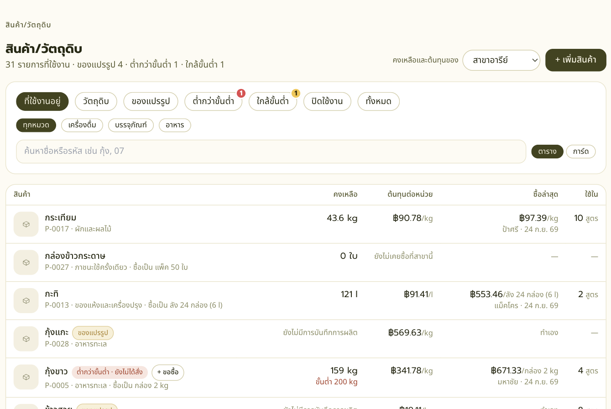
สินค้า/วัตถุดิบ (สาขาอารีย์)คงเหลือ · ต้นทุนต่อหน่วย · ซื้อล่าสุด · ใช้ในกี่สูตร · ต่ำกว่าขั้นต่ำ · + ขอซื้อ · กดแล้วมีแผง
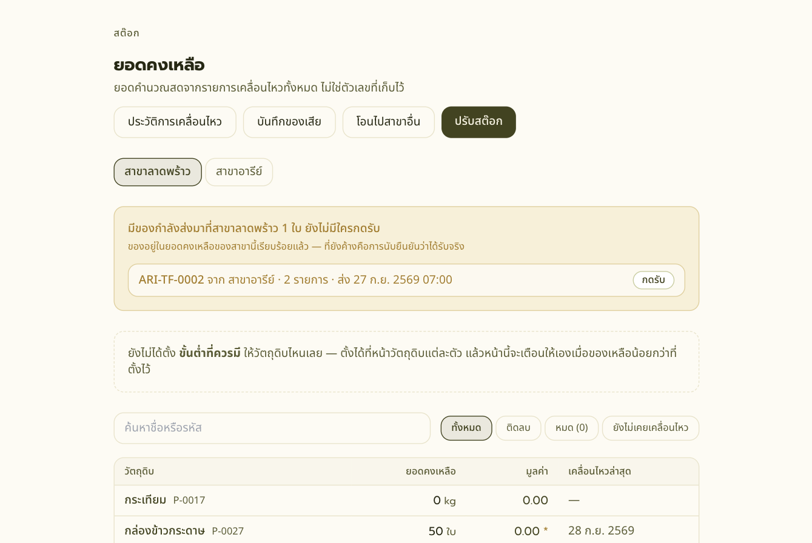
หัวหน้าสต๊อกทางเข้า ประวัติ · ของเสีย · โอน · ปรับสต๊อก (+ เปิดมาที่สาขาลาดพร้าวที่ไม่มีของ)
เสนอ: รวมเป็นหน้าเดียว — เพิ่มคอลัมน์ “มูลค่า” และ “เคลื่อนไหวล่าสุด” ในหน้าสินค้า · หน้าสต๊อกเหลือเป็นทางเข้า ปรับสต๊อก/ประวัติ/โอน · ข้อนี้ใหญ่ จะทำ mockup ก่อนลงมือ
B8
ราคาที่รับเข้าของสินค้าเดียวกัน วาด 2 แบบ
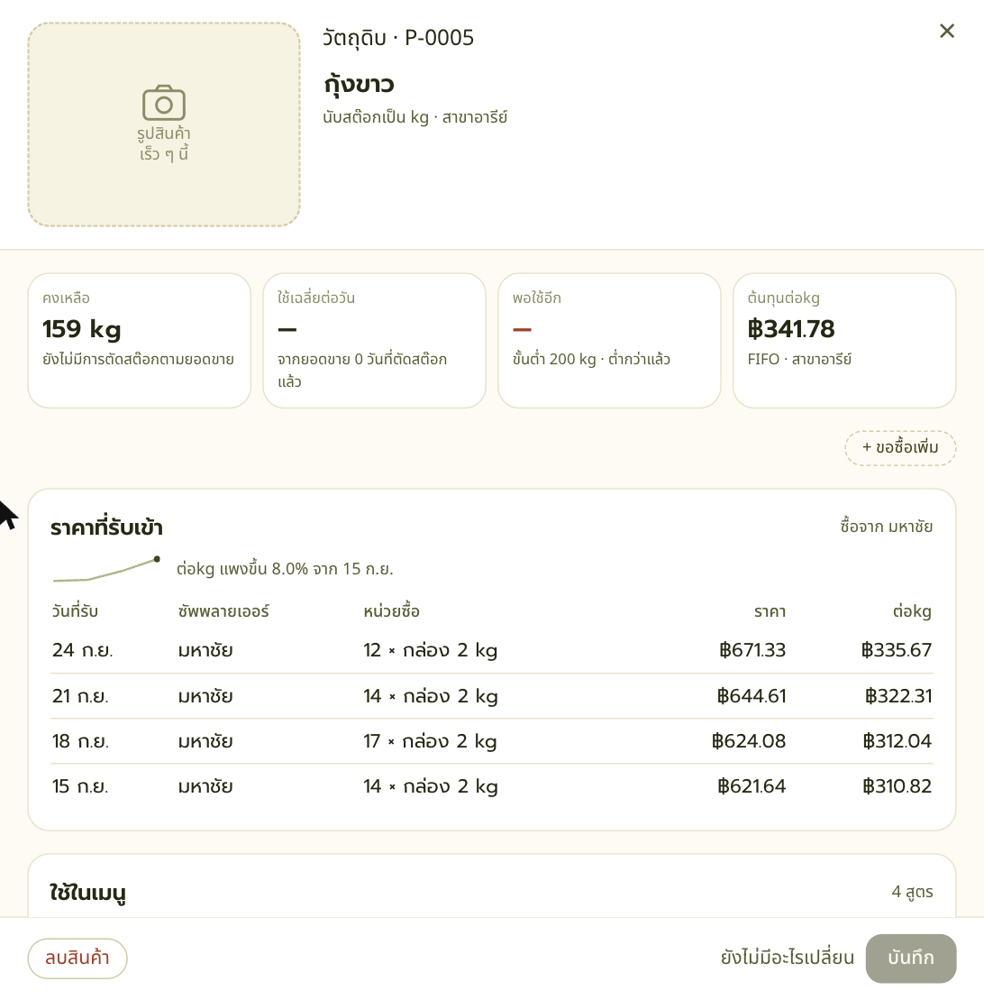
แผงสินค้า · ราคาที่รับเข้าตาราง 4 ใบล่าสุด + เส้นเล็ก + “แพงขึ้น 8.0% จาก 15 ก.ย.” (ดู C4)
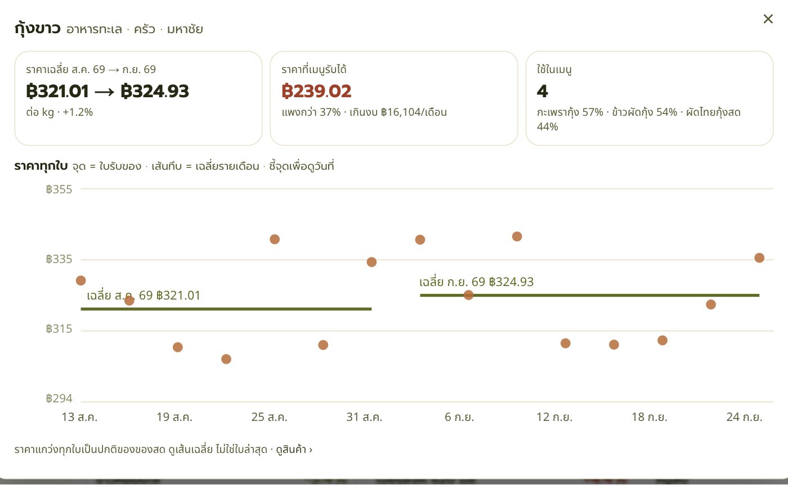
การผันผวนราคา · ป๊อปอัพราคาทุกใบเป็นจุด + เฉลี่ยรายเดือน + ราคาที่เมนูรับได้ + ใช้ในเมนู
เสนอ: ไม่ใช่ตัดทิ้ง — แผงสินค้าใช้กราฟเดียวกับป๊อปอัพ (เหลือแบบเดียว) และใช้ % จากราคาเฉลี่ย
B9
ยอดปิดร้าน (ยอดที่ลูกค้าจ่าย): คีย์ได้ 2 ที่
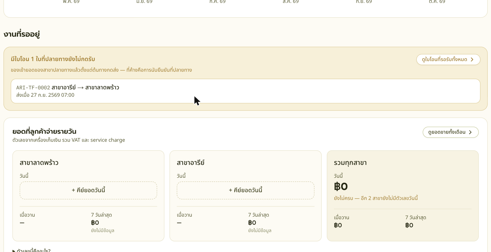
แดชบอร์ด · ยอดที่ลูกค้าจ่ายรายวัน (ล่าง)ต่อสาขา + “+ คีย์ยอดวันนี้”
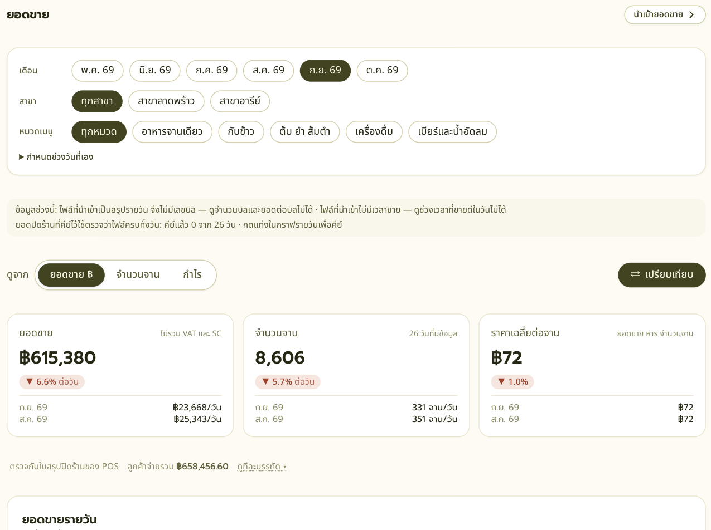
ยอดขาย“ยอดปิดร้านที่คีย์ไว้… คีย์แล้ว 0 จาก 26 วัน · กดแท่งเพื่อคีย์” + “ตรวจกับใบสรุปปิดร้าน ลูกค้าจ่ายรวม ฿658,456”
เสนอ: คีย์ที่แดชบอร์ดที่เดียว (งานประจำวัน) · หน้ายอดขายเหลือบรรทัดตรวจความครบ + ลิงก์
B10
ใบโอนที่รอกดรับ: เตือน 3 หน้า
แดชบอร์ด · งานที่รออยู่ (บน)“มีใบโอน 1 ใบที่ปลายทางยังไม่กดรับ”
สต๊อกคงเหลือ · แบนเนอร์“มีของกำลังส่งมาที่สาขาลาดพร้าว 1 ใบ ยังไม่มีใครกดรับ”
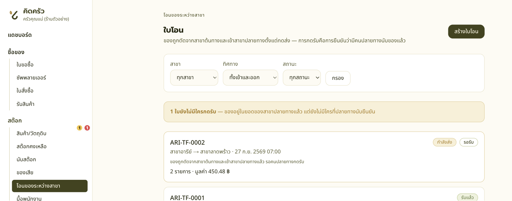
หน้าโอนแถบ “1 ใบยังไม่มีใครกดรับ” + รายการพร้อมปุ่มรอรับ
เสนอ: ตัดแบนเนอร์ในหน้าสต๊อก (แดชบอร์ดเป็นที่รวมงานที่รอ หน้าโอนเป็นที่กดรับ)
B11
หน้ายอดขาย: “วันไหนขายดี” กับ “หมวดไหนขายดีวันไหน” (เจอเพิ่มตอนถ่ายภาพ · เป็นตัวเลือก)
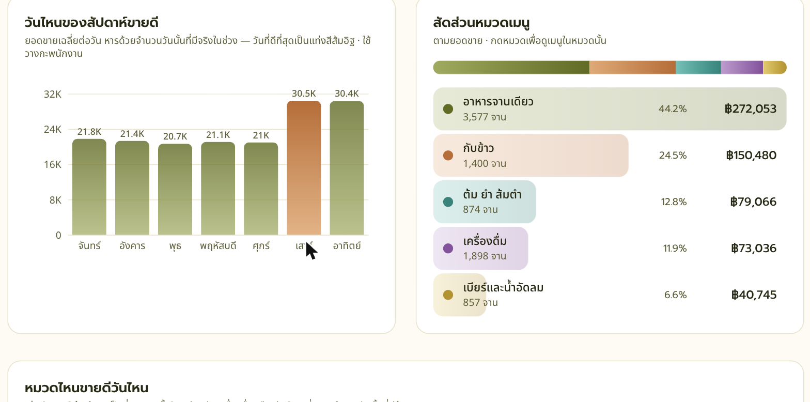
วันไหนของสัปดาห์ขายดี (ซ้าย) · สัดส่วนหมวดเมนู (ขวา)ยอดต่อวันแยกวัน · ยอดแยกหมวด
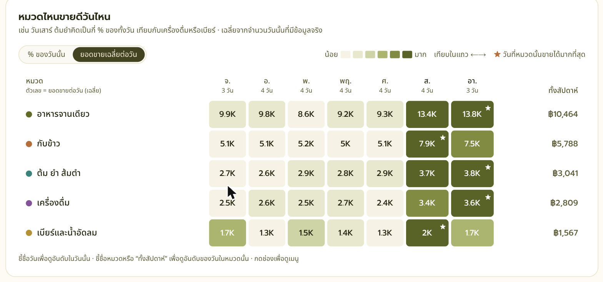
หมวดไหนขายดีวันไหน (โหมดยอดขายเฉลี่ยต่อวัน)ยอดต่อวัน × หมวด · คอลัมน์ “ทั้งสัปดาห์” = ยอดต่อวันของแต่ละหมวด
เสนอ (ตัวเลือก): กราฟ “วันไหนของสัปดาห์ขายดี” คือผลรวมแนวตั้งของตารางสี — เพิ่มแถว “รวม” ในตารางสีแล้วตัดกราฟแท่งได้ · “สัดส่วนหมวดเมนู” เก็บ (เป็นทางเข้าดูเมนูในหมวด)
C1
ยอดขาย ก.ย.: แดชบอร์ดบอก “ดีขึ้น 28%” หน้ายอดขายบอก “ลดลง 6.6% ต่อวัน”
แดชบอร์ด▲ 27.8% เทียบ ส.ค. · เฉลี่ย ฿20,513/วัน · ส.ค. ฿15,533/วัน — หารด้วยวันในเดือน (30/31) และเทียบยอดรวม
ยอดขาย▼ 6.6% ต่อวัน · ก.ย. ฿23,668/วัน · ส.ค. ฿25,343/วัน — หารด้วยวันที่มีข้อมูล (26 / 19 วัน) ตามกฎ SI1
เสนอ: แดชบอร์ดใช้วิธีเดียวกับหน้ายอดขายทุกการ์ด (ยอดขาย ต้นทุน กำไร ค่าใช้จ่าย)
C2
แดชบอร์ด ก.ย.: กำไรสุทธิ ▲168.6% โดยไม่บอกว่ายังไม่มีเงินเดือน
แดชบอร์ดค่าใช้จ่าย ▼55.1% · กำไรสุทธิ ▲168.6% · อัตรากำไรสุทธิ 50.0% — ไม่มีคำเตือน
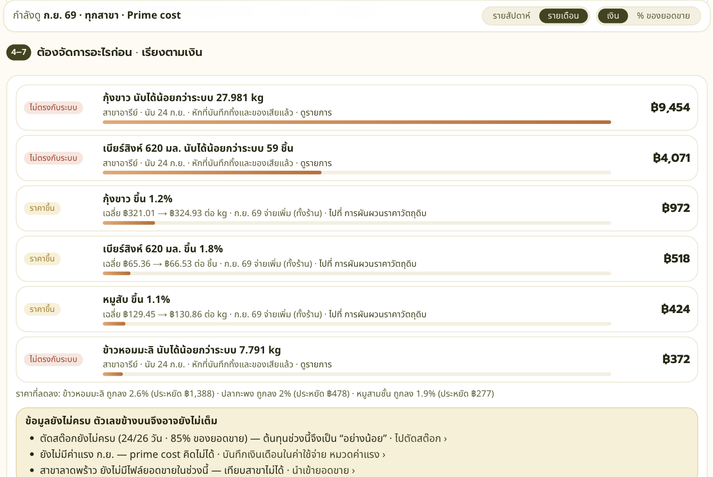
หน้าต้นทุน (กล่องเหลืองล่าง)“ยังไม่มีค่าแรง ก.ย. — prime cost คิดไม่ได้ · บันทึกเงินเดือน ›”
เสนอ: แดชบอร์ดเตือนเมื่อรายการประจำของเดือนนั้นยังไม่ได้บันทึก (เงินเดือน ฯลฯ) และไม่บอก “ดีขึ้น” จนกว่าจะครบ
C3
“ต้นทุน %” ชื่อคล้ายกัน ตัวเลขต่างกัน
แดชบอร์ด · ต้นทุนขาย“food cost 37.4%” — ของที่ตัดสต๊อกจริงใน ก.ย. (ราคา FIFO)
จัดการเมนู“ต้นทุนวัตถุดิบ เทียบยอดขาย 40.9%” — สูตร × ราคาวันนี้ × ยอดขาย 30 วันล่าสุด
เสนอ: ไม่ตัด (คนละความหมายจริง) แต่ตั้งชื่อให้ต่าง: “ต้นทุนของที่ใช้ไปจริง” กับ “ต้นทุนตามสูตร (ราคาวันนี้)”
C4
กุ้งขาว: แผงสินค้าบอก “แพงขึ้น 8.0%” หน้าการผันผวนบอก “+1.2%” (เจอเพิ่มตอนถ่ายภาพ)
แผงสินค้า (และแผงวัตถุดิบในหน้าเมนู)“ต่อkg แพงขึ้น 8.0% จาก 15 ก.ย.” — ใบเดียวเทียบใบเดียว
การผันผวนราคาเฉลี่ย ส.ค. ฿321.01 → ก.ย. ฿324.93 = +1.2% (กฎ CO-PRICE v2)
เสนอ: แผงสินค้าใช้ราคาเฉลี่ยแบบเดียวกัน (ไปพร้อม B8)
A
ข้อมูลเดียวกัน ความลึกต่างกัน — เก็บไว้
A1 รายรับรายวัน · แดชบอร์ดเส้นต่อสาขา ภาพรวม
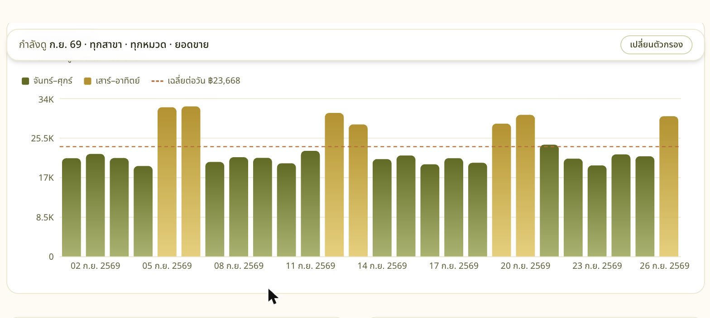
A1 ยอดขายรายวัน · หน้ายอดขายแท่ง วันหยุดสีต่าง เส้นเฉลี่ย กดดูวัน
A2 เมนูขายดี 10 อันดับ · แดชบอร์ด (ขวา)สรุป
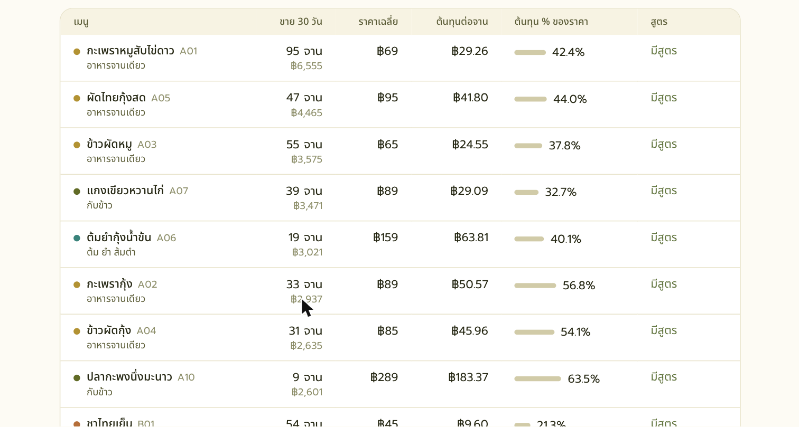
A2 จัดการเมนูขาย 30 วัน + ต้นทุนต่อจาน (ที่แก้เมนู)
A5/A6 หน้าต้นทุน · ต้องจัดการอะไรก่อน3 อันดับต่อเรื่อง แล้วพาไปหน้าลึก
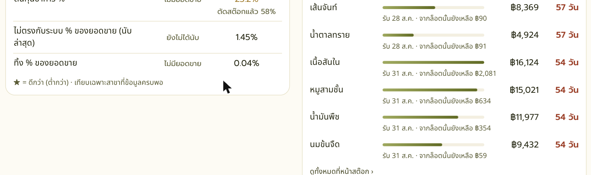
A7 เงินจมในสต๊อก · หน้าต้นทุนของค้างนาน (หน้าสินค้าไม่มี)
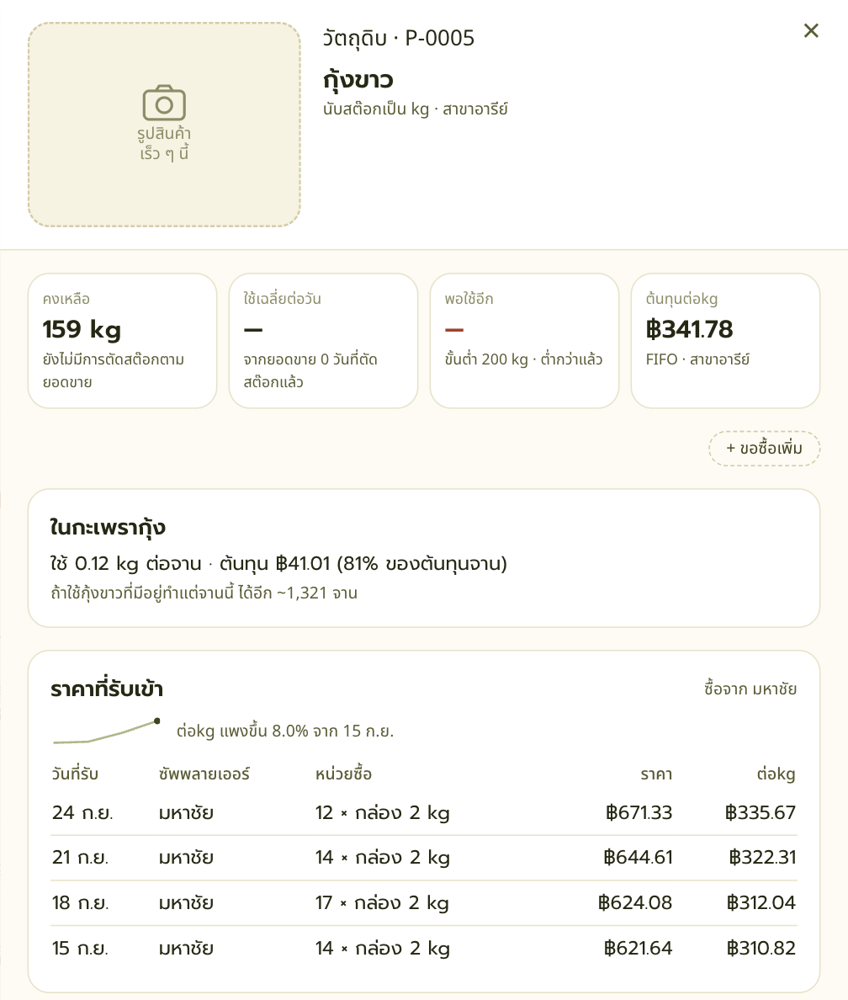
(เดิม B7) แผงวัตถุดิบในหน้าเมนูตรวจแล้ว เป็นแผงเดียวกับแผงสินค้าอยู่แล้ว + กล่อง “ในกะเพรากุ้ง” ที่บอกการใช้ในเมนูนั้น → ไม่ซ้ำ ย้ายมาเก็บ
D
เจอระหว่างตรวจ (ไม่ใช่ความซ้ำ)
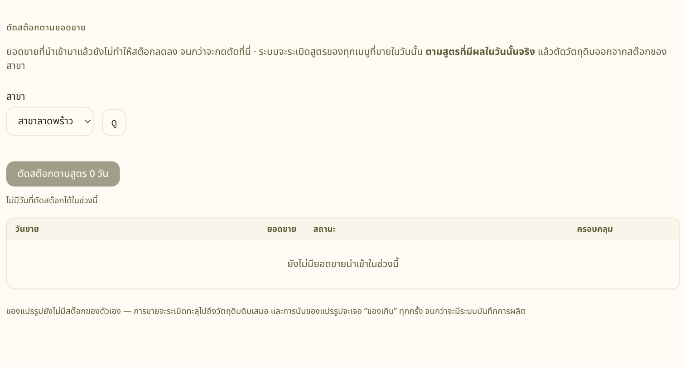
D1 ตัดสต๊อกตามยอดขาย เปิดมาที่สาขาลาดพร้าวช่วง ก.ย. ก็ขึ้น “ยังไม่มียอดขายนำเข้า” (สต๊อกคงเหลือก็เปิดมาที่ลาดพร้าวเหมือนกัน — ดู B6) · เสนอเปิดสาขาที่มีข้อมูลล่าสุด
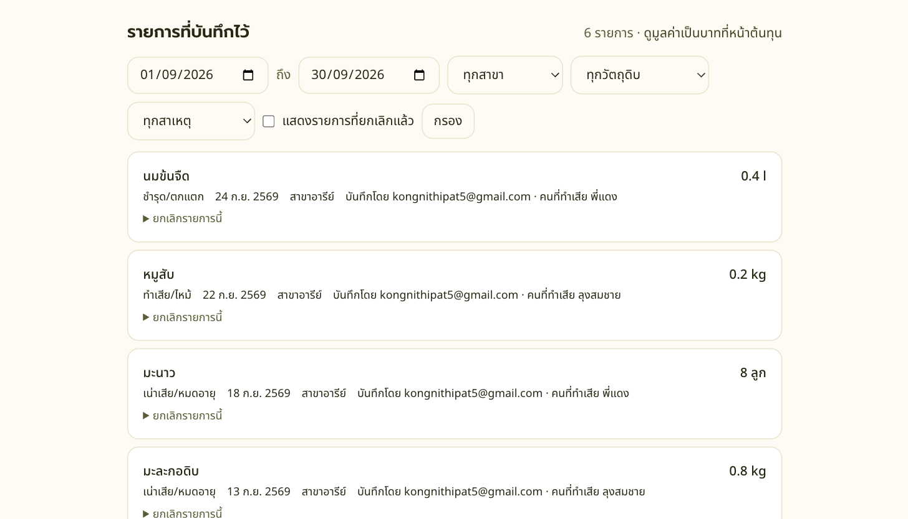
D2 ของเสียไม่มีมูลค่าเป็นบาท“ดูมูลค่าเป็นบาทที่หน้าต้นทุน” · เสนอแสดงบาทต่อรายการและรวม